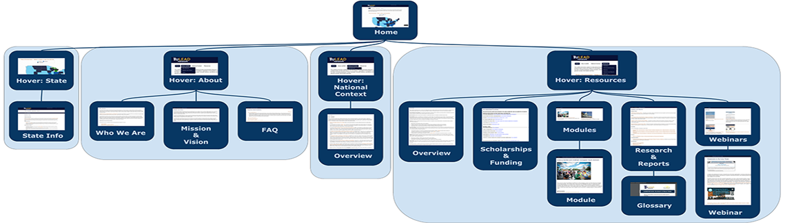

umich school of information masters student | intern for hire
uLead Network Consulting
JAN - APR 2019
Overview
uLead Network was developed at the University of Michigan about 10 years ago under the National Forum on Higher Education for the Public Good as a password-protected collection of resources to help university counselors and administrators provide support to undocumented college students. As the public political climate has changed over the last decade to be more open to undocumented students' issues, the site is now available to the public.
I worked with three of my fellow students this semester performing an iterative in-depth audit of uLead Network's websiteusing needs assessments and usability evaluaiton methods. I've documented summaries of each method's findings below.
Interaction Map
We generated a visual map (see image above) of the website to get an idea of its structure and relate its functionality to its purpose. We found the site to be a great resource in that it effectively centralizes an overwhelming amount of resources for people who might need to familiarize themselves with the legal and political issues that apply to undoumented students at American institutions of higher education. However, we thought the site was also a bit shallow in structure and would be difficult for students themselves to navigate. As the site was developed with policymakers and university administrators and counselors, this makes sense but the site might ideally become more accessible in its structure and interface design.
Interviews
After meeting with our client initially, we designed separate interview protocols for university administrators/counselors and students. The questions were designed to get a general idea of our target audience's needs and the types of resources they use to meet these needs. We conducted a couple of interviews(each of us running at least one) with individuals from each of these groups and took notes that were agglomerated into a formal report, available HERE.
Comparative Evaluation
The team performed a comparitive evaluation of the uLead Newtork website given an existing ecosystem of similar online products. We compared uLead to two university pages on resources for prospective undocumented students, several other sites with resources oriented primarily for undocumented students in specific states, and the website of a law center specializing in immigration. We evaluated these sites against our client's based on a multitude of features, including the type of information available on the site, as well as that information's breadth and depth; the type of interactive content available, their accessibility, and visual appeal.
Surveys
For this evalutaion iteration, I created this survey that we distributed to our target audience. The survey asks participatns their role and intesrest in accessing uLead Network's website, and about the positive and negative aspects of interacting with our client's websites and to competitors' websites.
Heuristic Evaluation
I compiled a list of heuristic tests (based on Nielsen concepts) by which each of the four members of the group evaluated the site, rating the severity of violation (from 'not a violation' to 'demands immediate attention') and took the means of our ordinally coded evlaluations to arrive at a consensus of the general strengths and weaknesses of the site. This gave us opportunity to include a systematically and fairly weighted instance of our own relatively more expert opinions on the site amongst our semester of data collection iterations.
Card Sorting
This study focuses on the resources section of the website, as it is the most structured and likely the most confusing to use, based on the results of the heuristic evaluation. We performed a remote, unmoderated card sorting methodology using OptimalSort to determine whether this section of the website is currently structured in a way that is intuitively navigable with external validation of our previous findings and to identify a starting place for developing a restructuring of the section. We created a set of cards, or minimal concepts, from the content of the section and one of us clustered them in a bottom-up strategy to develop more natural groupings. We also had 6 people unfamiliar with the site sort the concepts into groups on OptimalSort that made sense to them and label them. We then compared all these sortings and gathered trends to get an idea of what an intuitively navigable structure of the resources section might look like.
Usability Test
Using Validately software, we interviewed 4 people with varying levels of education and professional expertise in the subject matter of the site. To get a better understanding of the functionality of the uLead website, we devised three tasks to see how easily users would be able to navigate the website while remotely recording both their screens and their faces. We recorded participants' timing, success, thoughts, and frustrations throughout the process and drew insights from their reactions to the site.
Ultimate Findings
Because the site’s user base is so diverse in terms of user goals, education level, and legal literacy, our top recommendation is that uLead reorganize the resources available on their site with filtering or tabs so different types of users can identify and navigate the resources that address their specific goals when they visit the site
Because many undocumented students’ support systems contain people whose first language isn’t English, many of the people we interviewed, surveyed, and otherwise tested expressed that adding bilingual content would be helpful to the students who might reach out to their families or communities for help while they are navigating access to higher education.
In fact, although the site’s user base has expanded to include the students themselves since it was made available to the public, there is still a lot of legal jargon and intimidatingly dense text throughout the site. This makes it more difficult for high school students and lower level college students to navigate the site because they aren’t used to performing research using this type of resource. We think it would be helpful either to curate a set of resources tailored for students’ ease of access and understanding or to revise content to use language more accessible to people who have not yet gained the benefit of a college education.
Finally, it was noted throughout the process that although it is helpful for people to have easy access to PDF versions of the content available on the site, it would be more helpful if as much content as possible was made available on the site itself in html, or if resources provided as links to external reports in pdf form were explained and summarized more, so as to maintain the flow of navigation throughout the research process. At minimum, it would be helpful if links to PDF files were labeled as such and opened in a new tab.
You can find a collection of our reports using each methodology here
You can see a video presentation on these recommendations here